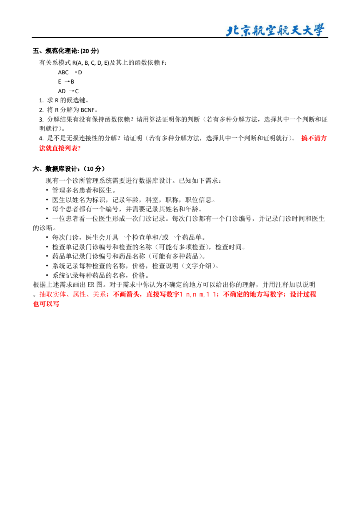
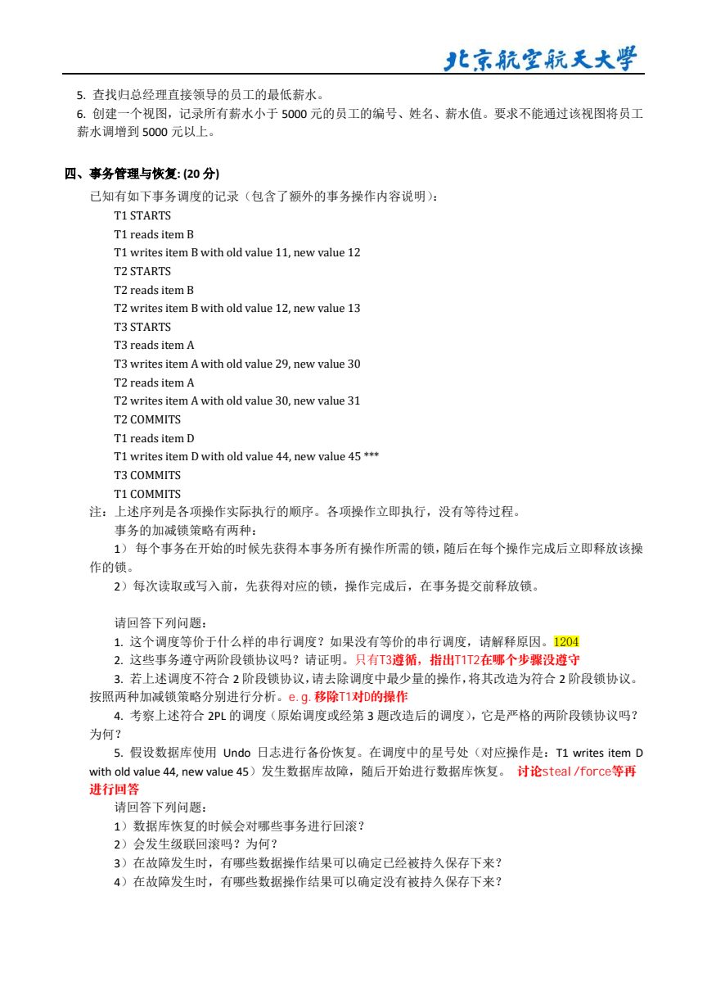
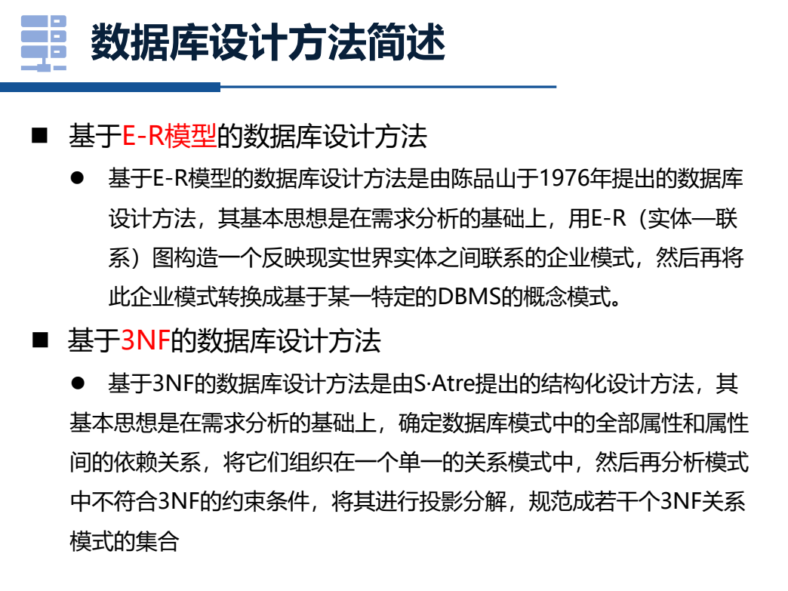

Day 3 数据库范式事务 ER 从零深学讲义
Day1 先解决 SQL 入门，Day2 加厚连接和嵌套。Day3 开始补数据库大题后半：函数依赖/范式、事务/恢复、ER 图。目标不是背概念，而是看到题干能切到正确流程并写出可得分步骤。
数据管理技术 6/22
Day3 数据库大题后半
2023A 重点桥接
先模板，再真题
范式 / 事务 / ER
0. 今天边界：SQL 之外的大题后半
数据库不是只考 SQL。往年题和 2023A 参考卷里，大题后半会把你带到三块：关系规范化、事务调度/恢复、数据库设计。它们看起来像三门课，但考试反应很固定。
函数依赖/范式
题干出现 R(A,B,C)、F={A->B}、候选键、BCNF、分解，就是这条线。
事务/恢复
题干出现 T1/T2、read/write、lock/unlock、commit/crash、Undo/Redo，就是这条线。
ER 图/设计
题干是一段业务描述，出现医生、患者、门诊、预约、药品，就是抽实体联系。
今天过关不是“都看懂”。 今天过关是：每类题知道第一步、能套一张模板、能做 2023A 同风格基础题卡。
1. 大题分流：先判断是哪条线
题干信号 考点 第一步 最后要交什么
R(A,B,C,D,E), F={...} 函数依赖/范式 求闭包和候选键。 候选键、最高范式、BCNF/3NF 分解。 T1, T2, r(A), w(B) 并发调度 找冲突操作，画优先图。 是否冲突可串行化、等价串行顺序。 lock/unlock, 2PL, strict 2PL 锁协议 找每个事务第一次 unlock。 是否满足 2PL/严格 2PL。 日志、检查点、crash、Undo/Redo 恢复 按提交状态分 Undo/Redo 集合。 哪些事务撤销，哪些重做，恢复后数据值。 医生、患者、门诊记录 ER 图 圈实体、属性、联系、基数。 ER 图或关系模式转换。
第一反应口诀：R/F 看范式；T/read/write 看事务；lock/unlock 看 2PL；crash/log 看恢复；业务名词看 ER。
2. 范式题脑内导航：先找“钥匙”，再判“表病”
范式题最容易让人害怕，是因为它一上来就给 R(A,B,C,D,E) 和一堆箭头。你可以先把它想成一个“档案柜”：A、B、C、D、E 是档案柜里的信息格子，函数依赖是“知道哪些格子，就能推到哪些格子”的规则。候选键就是一把最小钥匙：拿着它，能打开全部格子；但少拿任何一片钥匙，就打不开全部。
第一条铁律： 不要一上来判断 2NF/3NF/BCNF。先求候选键。因为“主属性、非主属性、超码、部分依赖、传递依赖”全都依赖候选键。
超码
能推出全部属性的一组属性。它可以很大，比如 ABCDE 一定是超码，但太笨重。
候选键
最小超码。能推出全部属性，并且删掉任意一个属性就不能推出全部。
主属性
出现在某个候选键里的属性。比如候选键有 AEC、AED，则 A/E/C/D 都是主属性。
非主属性
不在任何候选键里的属性。范式违规常常围绕“非主属性被不该决定的人决定”。
2.1 候选键四步法
先找右边从没出现过的属性。 如果某个属性从来不在任何依赖右边，它通常不能被别人推出，所以它必须在每个候选键里。
从这些必带属性开始求闭包。 闭包就是“我现在拿着这些属性，沿着箭头一路能得到什么”。
闭包不够全，就补一个缺的属性再试。 不要乱补，优先补能触发更多箭头左边的属性。
闭包够全后检查最小性。 逐个删属性试一试，删了还能推出全部就不是候选键，删了不行才是最小。
找必带属性
不在任何右边
求闭包
沿箭头推出去
得到候选键
能全推且最小
判断范式
逐条看 X -> A
考场提醒
候选键没算清，后面的“主属性/非主属性/超码/BCNF”都会跟着错。
范式题不是从定义表开始，而是从“这张表的钥匙是谁”开始。
2.2 用一条依赖判断范式：X -> A 到底犯不犯规
求完候选键后，范式判断就变成逐条检查函数依赖。看到一条 X -> A，先问左边 X 够不够强，再问右边 A 是不是主属性。
检查句 怎么理解 结论
X 是超码吗？ X 能推出全部属性，说明这个决定因素已经足够强。 这条依赖不违反 BCNF，也不违反 3NF。 X 不是超码，但 A 是主属性吗？ 右边 A 出现在候选键里，3NF 对它放宽。 可能满足 3NF，但一定不满足 BCNF。 X 是组合候选键的一部分，A 是非主属性吗？ 非主属性只依赖钥匙的一部分，这是部分依赖。 违反 2NF，也就谈不上 3NF/BCNF。 X 不是候选键，A 是非主属性吗？ 非主属性被非钥匙决定，常见为传递依赖。 通常违反 3NF，更违反 BCNF。
最常见失分： 把“左边不是超码”直接说成“不满足 3NF”。这只对右边是非主属性时一定成立；如果右边是主属性，3NF 可能还过，但 BCNF 过不了。
2.3 套到 2023A 的第一分钟
R(A,B,C,D,E)
F = { ABC -> D, E -> B, AD -> C }
第一眼不是判断 BCNF，而是先找候选键。右边出现过的属性有 D、B、C；没有出现在右边的是 A、E，所以 A、E 必须带。AE+ 只能推出 B，还缺 C、D；因此要补 C 或 D。补 C 得 AEC+ = ABCDE，补 D 得 AED+ = ABCDE，所以候选键是 AEC、AED。
有了候选键，主属性就是 A、E、C、D，非主属性只有 B。再判断依赖：E -> B 的左边 E 不是超码，右边 B 是非主属性，所以它至少违反 3NF，也违反 BCNF；ABC -> D 左边 ABC 不是超码，但右边 D 是主属性，所以它不一定破坏 3NF，却破坏 BCNF；AD -> C 同理，破坏 BCNF。
3. 函数依赖从零：谁能决定谁
函数依赖 X -> Y 的人话是：只要 X 的值确定，Y 的值也被唯一确定。比如学号确定姓名，所以 学号 -> 姓名；但姓名不一定确定学号，因为可能重名。
决定因素 X 箭头左边，像钥匙。它决定别的属性。
被决定属性 Y 箭头右边，像被钥匙打开的信息。
属性闭包 X+ 从 X 出发，用所有依赖能推出的属性集合。
候选键 能推出全部属性，并且删掉任何一个属性就不行的最小属性组。
3.1 闭包怎么求
把起点 X 先放进 X+。
扫描函数依赖：如果某条依赖左边已经都在 X+ 里，就把右边加入 X+。
继续扫描，直到 X+ 不再变大。
如果 X+ 包含关系模式的全部属性，X 是超码；再检查最小性，就是候选键。
起点 X 先放入 X+
扫描 F 左边在 X+?
加入右边 X+ 变大
不再变 停止
X+ 变大就继续扫描，直到不能推出新属性。
3.2 2023A 候选键起步
R(A,B,C,D,E)
F = { ABC -> D, E -> B, AD -> C }
先观察哪些属性从来不出现在任何依赖右边。A、E 没有出现在右边，所以它们不能由别人推出，候选键通常必须带上 A、E。
AE+ = {A,E}。由 E -> B 得到 B，所以 AE+ = {A,E,B}。
AE+ 还缺 C、D，不能继续推出全部属性，所以 AE 不是键。
AEC+：有 A,E,C；E -> B 得 B；有 A,B,C 后用 ABC -> D 得 D，所以 AEC+ = ABCDE。
AED+：有 A,E,D；E -> B 得 B；有 A,D 后用 AD -> C 得 C，所以 AED+ = ABCDE。
2023A 风格答案：候选键为 AEC、AED。写答案时要说明“能推出全部属性”和“去掉任一属性不再能推出全部属性”。
4. 范式判断：从异常到 1NF/2NF/3NF/BCNF
范式不是为了背缩写，而是为了减少表设计造成的重复和异常。异常主要有三种：更新异常、插入异常、删除异常。
范式 人话 考试判断 常见坑
1NF 每个单元格都是不可再分的原子值。 表里不能一个格子塞多个电话/多个课程。 一般默认关系模式满足 1NF。 2NF 非主属性不能只依赖组合键的一部分。 候选键是组合属性时，检查部分依赖。 单属性候选键时通常不会违反 2NF。 3NF 非主属性不能传递依赖于候选键。 对 X -> A，X 是超码或 A 是主属性。 3NF 允许右边是主属性的某些依赖。 BCNF 每个决定因素都必须足够强。 对每个非平凡 X -> Y，X 必须是超码。 BCNF 比 3NF 更强，可能不保持依赖。
1NF
2NF 消除部分依赖
3NF 消除传递依赖
BCNF 决定因素是超码
越往右约束越强。考试常问：最高到第几范式？是否满足 BCNF？如何分解？
BCNF 最高频判断句： 逐条看函数依赖，左边不是超码就违反 BCNF。
5. BCNF 分解：先会写得分骨架
BCNF 分解不是随便拆表，而是用违反 BCNF 的依赖来拆。模板如下：
若 R 中 X -> Y 违反 BCNF：
R1 = X ∪ Y
R2 = R - (Y - X)
然后继续检查 R1、R2 是否满足 BCNF。
对 2023A 的 R(A,B,C,D,E), F={ABC->D, E->B, AD->C}，所有左边 ABC、E、AD 都不是整个 R 的超码，因此都可能触发 BCNF 分解。分解顺序不唯一，答案也可能不唯一。
例如先用 E -> B 分解：R1(E,B)，R2(A,C,D,E)。R1 中 E 是键，满足 BCNF。
在 R2(A,C,D,E) 中，AD -> C 仍成立，AD 不是 R2 的超码，因此继续分解。
用 AD -> C 分解 R2：R21(A,D,C)，R22(A,D,E)。R21 中 AD 是键，满足 BCNF；R22 无明显非平凡依赖，满足 BCNF。
得到一个可用的 BCNF 分解：{ EB, ADC, ADE }。
考试表达要谨慎： BCNF 分解通常保证无损连接，但不一定保持所有依赖。2023A 这类题如果问“是否保持依赖”，要单独检查原依赖能否由分解后依赖推出。
6. 事务与并发：先找冲突，再画图
事务是数据库操作的最小工作单元。ACID 四个词不要孤立背，要知道考试怎么问。
性质 人话 常见题眼
原子性 A 要么全做，要么全撤销。 回滚、Undo、转账一半失败。 一致性 C 事务前后满足完整性约束和业务规则。 总金额不变、外键不被破坏。 隔离性 I 并发事务互不看到对方半截状态。 并发控制、锁、调度、隔离级别。 持久性 D 提交后不能因故障丢失。 Redo、日志、提交后断电。
6.1 冲突可串行化
看到 r(A)、w(A) 这类调度题，第一步永远是找冲突。冲突必须同时满足：不同事务、同一数据项、至少一个写。
r-r 不冲突。大家只是读，不改变数据。
r-w 冲突。一个读，一个改。
w-r 冲突。一个改，一个读。
w-w 冲突。两个都改。
T1
T2
T3
T1 先冲突
T2 先冲突
优先图无环：冲突可串行化；有环：不可冲突串行化。
6.2 2PL 与严格 2PL
两阶段锁协议不是“上锁”三个字，而是“先只申请锁，后只释放锁”。
判断 2PL：
1. 对每个事务，找到第一次 unlock。
2. 如果第一次 unlock 之后还申请任何新锁，则违反 2PL。
3. 如果写锁一直持有到 commit/abort，通常满足严格 2PL 的要求。
考试句： 2PL 可以保证冲突可串行化；严格 2PL 还能避免级联回滚，恢复更容易。
7. 恢复：Undo/Redo 先按提交状态分类
恢复题不要一看到日志就乱算。先问：崩溃时哪些事务已经提交？哪些没提交？
Undo 撤销未提交事务造成的影响，保证原子性。
Redo 重做已提交但可能没写入磁盘的影响，保证持久性。
日志 记录旧值/新值、开始、提交、回滚，是恢复依据。
检查点 把某一时刻的状态落盘，缩短恢复扫描范围。
Checkpoint
Commit T1
Crash
T2 未提交：Undo
T1 已提交：Redo 或确认
恢复题答题模板：
1. 从检查点或日志起点扫描到 crash。
2. 找 commit 记录：已提交事务进入 Redo/确认集合。
3. 没有 commit 的事务进入 Undo 集合。
4. Undo 用旧值撤销，Redo 用新值重做。
8. ER 图：从业务描述抽实体、联系、基数
ER 图不是美术题，是把自然语言数据库设计变成结构。看到诊所、医生、患者、门诊记录，不要直接画，先圈名词和动词。
元素 人话 诊所例子
实体 能独立存在、需要记录信息的对象。 医生、患者、科室、药品、门诊记录。 属性 实体自己的信息。 医生编号、姓名、职称；患者编号、姓名、年龄。 联系 实体之间发生的关系。 医生接诊患者；门诊记录包含药品。 基数 关系两端数量约束。 一个医生可接诊多个患者；一次门诊记录可包含多种药品。
医生
患者
接诊
门诊记录
药品
1
N
产生
包含
ER 答题模板：圈实体 -> 给主键和属性 -> 圈联系 -> 标基数 -> M:N 联系单独转关系表。
这张只是骨架，不是考试完整答案。 真正上卷面要有主键、关键属性、基数、M:N 中间表和关系表转换。请接着打开
数据库 ER 作图工坊 ，看两张完整标准图并复画一遍。
9. 题卡训练：先写骨架，再看解析
每题先写题眼、第一步和标准模板。不要只看答案。
题 1：2023A 风格候选键
设 R(A,B,C,D,E)，F={ABC->D, E->B, AD->C}。求候选键。
看答案和解析
题眼： R 和 F 出现，先做函数依赖题。求候选键必须算闭包。
关键观察： A、E 没出现在任何函数依赖右边，所以它们不能由其他属性推出，候选键通常必须包含 A、E。
计算： AE+ = AEB，还缺 C、D，所以 AE 不够。AEC+ 中 E->B，得到 A,B,C,E；再由 ABC->D 得到 D，所以 AEC+ = ABCDE。AED+ 中 E->B，AD->C，再得到全部属性，所以 AED+ = ABCDE。
最小性： A、E 必须保留；C 或 D 分别是补足推出全属性的关键。去掉其中任一属性都不能推出全部属性。因此候选键为 AEC、AED。
题 2：BCNF 判断与分解
仍设 R(A,B,C,D,E)，F={ABC->D, E->B, AD->C}。判断是否满足 BCNF，并给出一个 BCNF 分解。
看答案和解析
题眼： BCNF 判断只看非平凡依赖 X->Y 的左边 X 是否是超码。
判断： ABC 不能推出 E，所以不是超码；E 不能推出 A,C,D，所以不是超码；AD 不能推出 E,B，所以不是超码。因此 R 不满足 BCNF。
一种分解： 先按 E->B 分解为 R1(E,B) 和 R2(A,C,D,E)。R1 满足 BCNF。R2 中 AD->C 仍违反 BCNF，于是分解为 R21(A,D,C) 和 R22(A,D,E)。最终得到 {EB, ADC, ADE}。
高分提醒： 分解顺序不唯一，但每一步要说明由哪条违反 BCNF 的依赖触发；BCNF 分解通常无损，但不一定保持依赖，要按题目要求另行检查。
题 3：冲突操作和优先图
给定调度：r1(A), w2(A), r3(B), w1(B), w3(A)。请写出冲突边，并判断是否可能冲突可串行化。
看答案和解析
A 上的冲突： r1(A) 在 w2(A) 前，得到 T1 -> T2；r1(A) 在 w3(A) 前，得到 T1 -> T3；w2(A) 在 w3(A) 前，得到 T2 -> T3。
B 上的冲突： r3(B) 在 w1(B) 前，得到 T3 -> T1。
判断： 优先图中有 T1 -> T3 -> T1 的环，因此不可冲突串行化。
容易错： r1(A) 和 r3(B) 不同数据项，不冲突；读读不冲突；同一事务内部不画冲突边。
题 4：2PL 判断
事务 T1 的锁序列为 lock(A), lock(B), unlock(A), lock(C), unlock(B), unlock(C)。它是否满足两阶段锁协议？
看答案和解析
答案： 不满足 2PL。
解析： 2PL 要求事务先处于增长阶段，只申请锁不释放；一旦释放锁，就进入收缩阶段，之后不能再申请新锁。T1 在 unlock(A) 后又 lock(C)，说明释放锁后又申请新锁，违反 2PL。
考试模板： 找每个事务第一次 unlock；若其后仍有 lock，则违反 2PL。
题 5：Undo/Redo 分类
系统崩溃时，T1 已 commit，T2 已 start 但未 commit，T3 已 commit。恢复时哪些事务需要 Undo，哪些需要 Redo 或确认？
看答案和解析
答案： T2 需要 Undo；T1、T3 需要 Redo 或确认已经持久化。
解析： 未提交事务不能把半截修改留在数据库里，所以要撤销，保证原子性。已提交事务的结果必须保留下来，如果可能还没写回磁盘，就用 Redo 保证持久性。
迁移： 具体题若给日志旧值/新值，就按 Undo 用旧值、Redo 用新值来恢复数据项。
题 6：ER 图起手
某诊所系统需要管理医生、患者、门诊记录和药品。医生可接诊多个患者，患者可产生多条门诊记录，门诊记录可包含多种药品。请写出实体、联系和基数。
看答案和解析
实体： 医生、患者、门诊记录、药品。可根据题干补科室等实体。
联系： 医生接诊患者；患者产生门诊记录；门诊记录包含药品。
基数： 一个医生可接诊多个患者，一个患者也可能被多个医生接诊，视题干可设 M:N 或通过门诊记录实体化；一个患者可有多条门诊记录，门诊记录属于一个患者；一条门诊记录可包含多种药品，一种药品也可出现在多条记录中，通常是 M:N，需要中间关系表。
高分提醒： ER 图不是只画框。属性、主键、联系名、基数都要尽量标出。
10. 资料页核对：截图只作来源，不替代学习
下面是已从你的数据库资料中渲染出的关键页。讲义主体已经把它们重新拆成步骤和题卡。

2023A 第 5 页：规范化理论题，R(A,B,C,D,E) 与函数依赖 F。

2023A 第 4 页：事务调度、恢复、2PL/严格 2PL 相关题。
关系数据理论资料：函数依赖、候选键、范式和规范化的来源。

数据库设计资料：基于 E-R 模型的数据库设计方法。
11. Day3 过关闸门
B 级：可以继续做真题桥接
能求基础闭包和候选键；能按 BCNF 左边是否超码判断；能找冲突边；能判断 2PL；能抽 ER 实体联系。
A 级：考前冲分
能独立完成 2023A 风格规范化题骨架；能画优先图判断调度；能按日志提交状态分类 Undo/Redo；能把 ER 图转关系模式。
进入数据库 Day3 考前闭环 · 回到期末陪跑学习舱 · 回到讲义与学习舱同步路线